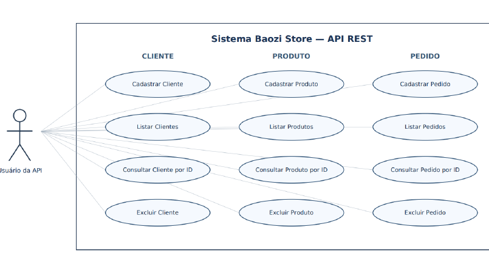
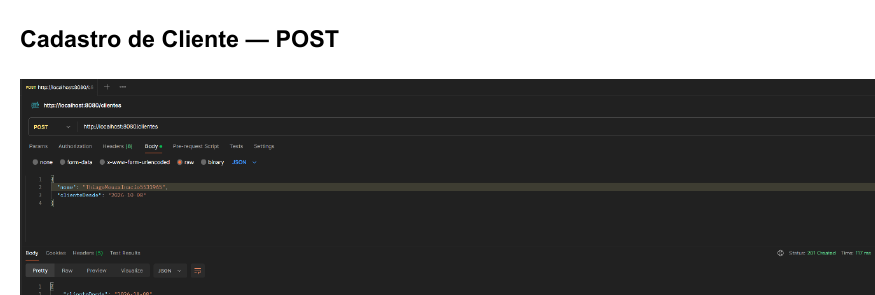
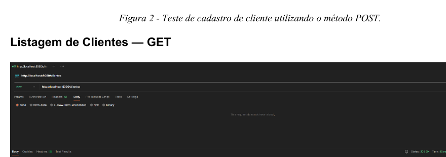

Do cenário de negócio à API funcional.
O projeto simula uma pequena loja de baozi que precisa organizar clientes, produtos e pedidos. A solução desenvolvida foi uma API REST capaz de cadastrar, listar, consultar por identificador e excluir registros dessas três entidades.
Minha atuação
- Modelagem das entidades Cliente, Produto e Pedido.
- Estruturação do projeto em camadas com model, repository e controller.
- Implementação de endpoints HTTP para as operações previstas no trabalho.
- Persistência dos dados utilizando Spring Data JPA e banco H2.
- Envio e recebimento de dados em formato JSON.
- Execução de testes funcionais com Postman.
- Versionamento e publicação do código-fonte no GitHub.

Diagrama de caso de uso desenvolvido para representar as operações disponíveis para Cliente, Produto e Pedido.
Arquitetura e tecnologias
A aplicação foi desenvolvida em Java utilizando Spring Boot e Spring Data JPA. A persistência foi realizada em banco relacional H2, e o gerenciamento das dependências foi feito com Maven. Os testes dos endpoints foram executados com Postman.
Endpoints implementados
| Método | Endpoint | Função |
|---|---|---|
| POST | /clientes | Cadastrar cliente |
| GET | /clientes | Listar clientes |
| GET | /clientes/{id} | Consultar cliente por ID |
| DELETE | /clientes/{id} | Excluir cliente |
| POST | /produtos | Cadastrar produto |
| GET | /produtos | Listar produtos |
| GET | /produtos/{id} | Consultar produto por ID |
| DELETE | /produtos/{id} | Excluir produto |
| POST | /pedidos | Registrar pedido |
| GET | /pedidos | Listar pedidos |
| GET | /pedidos/{id} | Consultar pedido por ID |
| DELETE | /pedidos/{id} | Excluir pedido |
Testes funcionais
As funcionalidades foram validadas em ambiente local por meio de requisições HTTP no Postman. Os testes incluíram cadastro, listagem, consulta por identificador e exclusão.

Exemplo de teste de cadastro utilizando requisição POST no Postman.

Exemplo de teste de listagem utilizando requisição GET no Postman.
O que este projeto demonstra
- Fundamentos de desenvolvimento back-end com Java.
- Construção e consumo conceitual de APIs REST.
- Organização de responsabilidades em uma aplicação Spring.
- Persistência de dados com JPA.
- Uso prático de métodos HTTP e JSON.
- Testes de endpoints com ferramenta dedicada.
- Uso de Git e GitHub no fluxo de desenvolvimento.
Próximos passos de evolução
Como evolução do projeto, pretendo implementar atualização de registros com PUT/PATCH, tratamento padronizado de erros, validação dos dados de entrada, relacionamentos mais completos entre as entidades e testes automatizados.